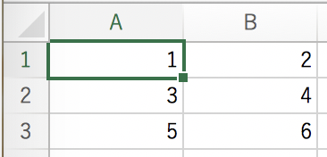
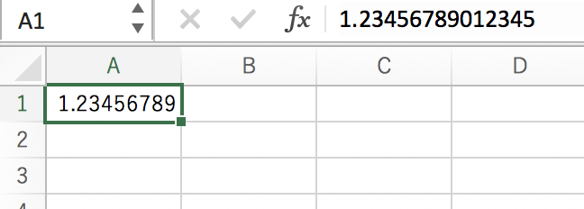

数値解析演習用 プログラミングに便利なやつ(C++)¶
C++で行列とベクトルを定義¶
C++でベクトルや行列を定義するために必要な必要なヘッダーファイル¶
#include <vector>ベクトル、行列の定義¶
行列やベクトルの第１成分はプログラム上では0からindexが始まるので注意int n = 2; //行列のサイズを定義 // 行列を宣言 vector<vector<double> > A(n,vector<double> (n));//nxn行列Aを定義（変数はdouble型） vector<double> b(n) ; //n次元ベクトルbを定義 // 実際に行列やベクトルに値を代入 A[0][0] = 1; A[1][1] = 1; // A = [1 0;0 1]という単位行列になる b[0] = 1 ; b[1] ; //b=[1 1]^Tというベクトルになるベクトルのサイズは
で読み取れます。int n = A.size(); //Aの行数 int m = A[0].size();//Aの列数ベクトルや行列の値を簡単に入力する方法¶
このように書けば簡単に具体的な行列を簡単に定義できる。 しかし、この書き方はC++11以降から対応しているため、環境によってはvector<vector<double> > A{{1,2,1,2}, {2,4,2,3}, {1,2,3,4}, {4,3,8,1}}; vector<double> b{7,7,7,7};とコンパイルする必要がある。$g++ -std=c++11 ***.cpp
参考サイト https://www.sejuku.net/blog/48660
乱数の生成¶
乱数を生成する方法¶
rand()という関数は0～32767の整数を返します。
x = rand();0~1の乱数生成¶
rand関数で生成される整数の最大値RAND_MAXで割ることで0~1の乱数を生成できます。ここで、rand()もRAND_MAXも整数型ですのでキャストを忘れずに
x = (double)rand()/RAND_MAX;
参考サイト https://webkaru.net/clang/display-random-numbers-between-0-1/
CSVに吐き出す¶
C++でCSVに吐き出すために必要な必要なヘッダーファイル¶
#include <iostream> #include <fstream> using std::endl; using std::ofstream;CSVファイルに書き込む¶
データを書き込むCSVファイルを指定する。
ofsという名前の変数にデータを書き込むことでhoge.csvにデータが入力されます。ofstream ofs("hoge.csv"); // ファイルを指定するotfに"1"という値を入力して","でセルを区切ります。 endlは改行を意味します。 例えばofs << 1 << ", "<< 2 << endl;と入力するとCSVファイルはofs << 1 << ", "<< 2 << endl; ofs << 3 << ", "<< 4 << endl; ofs << 5 << ", "<< 6 << endl;
となります。また
というヘッダーを加えて#include <iomanip>とするとdouble z = 1.2345678901234567; ofs << std::setprecision(16) << z <<endl;
のように、入力する桁数を指定することもできます。
scientific:指数表記
setprecision:小数点表記
参考サイト https://marycore.jp/prog/cpp/stream-format-float/